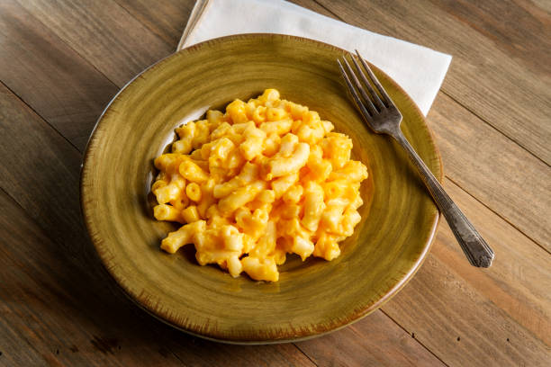

Quick, easy, and tasty macaroni and cheese dish.
Fancy, designer mac and cheese often costs forty or fifty dollars to prepare when you
have so many expensive cheeses, but they aren't always the best tasting.
This simple recipe is cheap and tasty.
- 1 (8 ounce) box elbow macaroni
- ¼ cup butter
- ¼ cup all-purpose flour
- ½ teaspoon salt
- 2 cups milk
- 2 cups shredded Cheddar cheese
- Ground black pepper, to taste
- Bring a large pot of lightly salted water to a boil. Cook elbow macaroni in the
boiling water, stirring occasionally until cooked through but firm to the bite, 8 minutes.
- At the same time, melt butter in a saucepan over medium heat.
- Add flour, salt, and pepper and stir until smooth, about 5 minutes.
- Pour in milk slowly, while stirring continuously. Continue to cook and stir until mixture is
smooth and bubbling, about 5 minutes, making sure the milk doesn't burn.
- Add Cheddar cheese and stir until melted, 2 to 4 minutes.
- Drain macaroni and fold into cheese sauce until coated.
- Serve hot and enjoy!